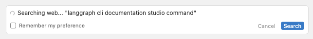

I've noticed a change in the last 24 hours about being able to drill into the file hierarchy, is that this?
Web search
CursorAI Agent Mode can now automatically search the web for up-to-date information without requiring explicit @Web commands. Here's what it looks like:

CursorAI/Security
Ignore files: CursorAI/.cursorignore now blocks files from being added in chat or sent up for tab completions, in addition to ignoring them from indexing.
NEW:CursorAI/.cursorindexingignore for specifically controlling file indexing
TODO#Qwhen would I want to put something in .cursorindexingignore instead of .cursorignore?
... if I wanted something to be available to cursor in file references but not indexed? What's the use of that?
perhaps the use case is that you have confidential information committed to the repo that's not a secret